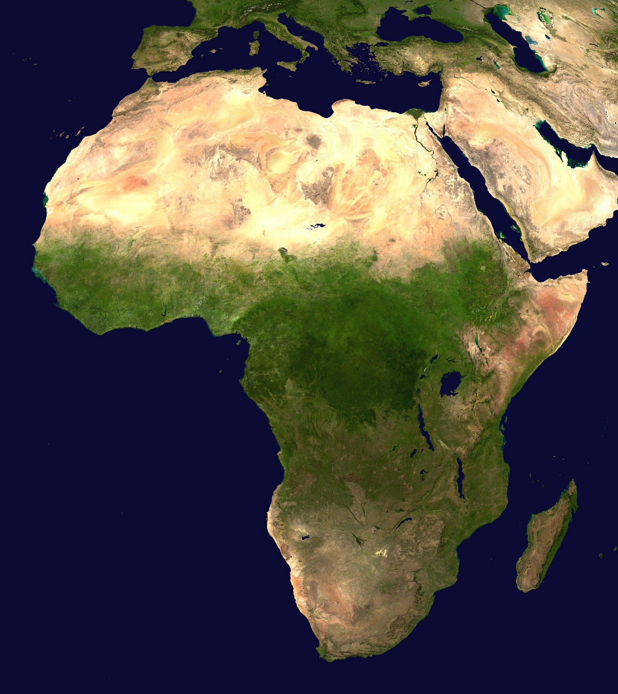

Africa

Suprafață - 30.244.050 km²
Populație - 1,225,080,510
Densitate - 34.1 locuitori/km²
Țări - 54
Generalități
Africa este al doilea continent ca mărime de pe Terra și cel mai populat după Asia. În Africa se găsește Nilul, cel mai lung fluviu din lume și Sahara, cel mai mare deșert din lume. Cel mai înalt punct al continentului este Muntele Kilimanjaro din Tanzania (5.895 m), iar cel mai jos punct este lacul Assal situat în micuța țară Djibouti (156 m sub nivelul mării). Africa are o suprafață de 30.244.050 km² incluzând și insulele adiacente, ocupă 20,3% din suprafața terestră a planetei. Cu peste 800 de milioane de locuitori în 54 de țări, Africa este gazdă a unei șeptimi din populația totală de pe glob.
În Africa își are originea rasa umană, de-a lungul văii Marelui Rift African ce traversează Etiopia și Kenya fiind descoperite cele mai vechi schelete ale înaintașilor oamenilor de azi.
Etimologie
Originea cuvântului Afer poate proveni din:
- feniciană, `afar (praf);
- Afri, un trib - posibil berber - din nordul Africii, în apropiere de Cartagina;
- cuvântul grecesc aphrike (fără frig);
- sau din cuvântul latin aprica (însorit).
Climă
Africa este continentul cu clima cea mai caldă de pe glob, cu o zonă de climă ecuatorială (cu temperaturi medii anuale având variații sezoniere reduse și cantități mari de precipitații), două zone de climă subecuatorială, două zone tropicale cu precipitații extrem de reduse (între 50 și 150 mm anual) și două zone subtropicale (cu două sezoane opuse, ploios și secetos). Temperatura cea mai ridicată (58°C) s-a înregistrat la Aztztyah (Libia) la 13 septembrie 1922. Valorile termice de peste 40°C sunt frecvente în întreaga Sahară.
Istorie
Africa este cel mai vechi teritoriu locuit de pe pământ, rasa umană avându-și originea pe acest continent. Începând cu secolul 19, dar mai ales pe parcursul secolului 20, diverși antropologi au descoperit fosile și alte dovezi ce atestă prezența în Africa a unor specii umanoide acum 7 milioane de ani. De-a lungul perioadei preistorice, în Africa nu au existat state organizate, continentul fiind locuit de grupuri de vânători/culegători, organizate în structuri tribale, precum Khoi și San (cunoscuți și sub numele de boșimani). Majoritatea urmașilor de azi ai boșimanilor trăiesc în Botswana și Namibia, iar limba vorbită de ei, limba N/U, este considerata cea mai veche limbă ce a supraviețuit până azi.
Înregistrarea scrisă a istoriei începe în Africa în jurul datei de 3300 î.Hr, odată cu dezvoltarea civilizației egiptene. Alte civilizații puternice ce apar în Africa în această perioadă sunt Imperiul Axumit din Etiopia, regatul Nubian, Cartagina, regatele Sahel-ului (Ghana, Mali, Songhai) și Marele Zimbabwe.
Primele avanposturi comerciale europene sunt înființate în Africa de catre portughezi începând cu 1482, principalele mărfuri comercializate fiind aurul, fildeșul, mirodeniile și sclavii. Odata cu descoperirea Americii, comerțul cu sclavi ia avânt, această practică barbară fiind abolită abia în secolul XIX.
Tot atunci începe o cursă febrilă de colonizare a Africii de către națiunile europene, cea mai mare parte a continentului (cu excepția Etiopiei) intrând sub stăpânirea Angliei, Franței, Olandei și a celorlalte puteri coloniale.
Statele africane încep să-și câștige suveranitatea la mijlocul secolului XX, astfel că azi în Africa se găsesc 54 de state recunoscute (precum și alte teritorii), ale căror granițe au fost însă trasate în perioada colonială.